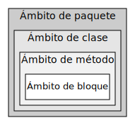

Ricardo Pérez López
IES Doñana, curso 2021/2022
public]
[abstract |
final] class
⟨nombre⟩
{}identificadorstatic] ⟨decl_variables⟩abstract ⟨decl_método⟩static] ⟨def_método⟩public |
private |
protectedLa definición de una clase es una construcción sintática que define su propio ámbito y que está formada por un bloque de declaraciones de miembros, cuada una de las cuales puede declarar una variable (también llamada campo) o un método.
A su vez, cada miembro puede ser de instancia o puede ser estático.
Una clase pertenece siempre a un paquete, que es el paquete en el que se ha definido.
Por tanto, el ámbito de la definición de la clase y el espacio de nombres donde reside la clase es el paquete donde se ha definido dicha clase.
Aquí decimos «ámbito de la definición» y no «ámbito de la declaración» porque las clases se definen, no se declaran; pero no olvidemos que una definición contiene siempre una declaración.
El uso y definición de paquetes en Java lo estudiaremos con más profundidad posteriormente.
Por ahora, sólo diremos que, mientras no se diga lo contrario, las clases se definen en el llamado paquete predeterminado, que es un paquete especial que no tiene nombre y que se define automáticamente en todo programa Java.
En relación a los paquetes en las que se definen, las clases pueden tener dos tipos de visibilidades:
Visibilidad predeterminada (por defecto o default): la clase sólo es accesible desde el interior del paquete en el que se ha definido.
Visibilidad pública: la clase es accesible desde cualquier paquete.
Para indicar la visibilidad que debe tener una clase, se puede usar un modificador de acceso.
Cuando no se utiliza ningún modificador de acceso al definir la clase, ésta se define con visibilidad predeterminada.
En un archivo fuente pueden definirse tantas clases con visibilidad predeterminada como se desee.
Además, en ese caso el archivo fuente puede tener cualquier
nombre (por supuesto, siempre con extensión
.java).
Para definir una clase con visibilidad pública, se usa el
modificador de acceso public en la definición de la clase.
En un archivo fuente pueden definirse muchas clases, pero sólo una de ellas puede ser pública.
Además, el archivo fuente debe llamarse igual que la (única) clase pública que contiene.
Los miembros de una clase pueden ser:
Variables:
De instancia o estáticas.
Finales o no finales.
Métodos:
De instancia o finales.
Abstractos o concretos.
Finales o no finales.
Las variables se declaran.
Los métodos abstractos se declaran y los concretos se definen.
Los miembros de una clase se declaran (o se definen) dentro del cuerpo de la clase, de forma que:
El ámbito de la declaración (o definición) de un miembro de la clase es todo cuerpo de la clase, independientemente del punto concreto donde se haya declarado (o definido) el miembro dentro de la clase.
La clase es el espacio de nombres donde se almacena el miembro.
Por tanto, no puede haber varias variables distintas o varias métodos distintos con el mismo nombre en la misma clase, aunque sí en distintas clases.
Curiosamente, sí puede haber una variable y un método con el
mismo nombre dentro de la misma clase, ya que el compilador distingue
entre el acceso a una variable (o.x) y la invocación de un
método (o.x()).
Por tanto, se puede decir que las clases contienen dos espacios de nombres distintos y separados: uno para las variables y otro para los métodos.
Cada miembro de una clase puede tener uno de estos cuatro tipos de visibilidades:
Visibilidad privada: el miembro sólo es accesible desde el interior de la clase en la que se ha definido.
Visibilidad predeterminada (por defecto o default): el miembro es accesible desde el interior de la clase en la que se ha definido y también desde otras clases que pertenezcan al mismo paquete.
Visibilidad protegida: el miembro es accesible desde el interior de la clase en la que se ha definido, también desde otras clases que pertenezcan al mismo paquete y también desde sus subclases (aunque se hayan definido en paquetes distintos).
Visibilidad pública: el miembro es accesible desde el interior de la clase en la que se ha definido y también desde cualquier otra clase (siempre que la clase en sí también sea accesible).
La visibilidad es un mecanismo de encapsulación que impide que ciertos miembros puedan ser accedidos (o incluso conocidos) fuera de la clase en la que se han definido, o fuera del paquete que contiene la clase en la que se ha definido.
El siguiente cuadro resume las cuatro visibilidades y desde dónde se puede acceder a un miembro definido con una determinada visibilidad en una determinada clase:
| Visibilidad | La propia clase | Otras clases del mismo paquete | Subclases de la clase | Otras clases de cualquier paquete |
|---|---|---|---|---|
| Privada | Sí | No | No | No |
| Predeterminada | Sí | Sí | No | No |
| Protegida | Sí | Sí | Sí | No |
| Pública | Sí | Sí | Sí | Sí |
Otro cuadro más detallado que dice lo mismo que el anterior, pero más desglosado:
| Visibilidad | Privada | Predeterminada | Protegida | Pública |
|---|---|---|---|---|
| La propia clase | Sí | Sí | Sí | Sí |
| Subclases del mismo paquete | No | Sí | Sí | Sí |
| No subclases del mismo paquete | No | Sí | Sí | Sí |
| Subclases de distinto paquete | No | No | Sí | Sí |
| No subclases de distinto paquete | No | No | No | Sí |
La visibilidad que queremos que tenga un determinado miembro se indica mediante los llamados modificadores de acceso.
Los modificadores de acceso son palabras clave que acompañan a la declaración de un miembro y que sirven para indicar la visibilidad deseada para ese miembro.
La forma de indicar que se desea que un miembro tenga visibilidad predeterminada es no usar ningún modificador de acceso en su declaración.
Para el resto de visibilidades existe un modificador de acceso que puede ir acompañando a la declaración de cada miembro:
| Visibilidad | Modificador de acceso |
|---|---|
| Pública | public |
| Privada | private |
| Protegida | protected |
| Predeterminada | (ninguno) |
En una clase se pueden declarar variables de instancia.
Cuando se instancia un objeto a partir de esa clase, dicho objeto contiene las variables de instancia declaradas en su clase, además de otras posibles variables de instancia públicas o protegidas que se hayan podido heredar de sus superclases (y que estarán declaradas en éstas).
La declaración de una variable de instancia de una clase tiene básicamente la misma sintaxis que la usada para declarar cualquier otra variable, dentro del cuerpo (bloque) de la definición de la clase y fuera de cualquier método.
Además, las variables de instancia se pueden inicializar en la misma declaración, usando la sintaxis ya vista anteriormente.
La declaración puede (y suele) incluir algún modificador de acceso.
Por ejemplo:
Una clase no puede tener dos variables de instancia con el mismo nombre. Por tanto, no se pueden declarar dos variables de instancia con el mismo nombre en la misma clase:
Tampoco podrá declarar una variable de instancia con el mismo nombre que otra variable de instancia que haya heredado de alguna de sus superclases.
Para acceder a una variable de instancia de un objeto, se usa el
operador punto (.), con la sintaxis ya conocida:
referencia.variable
Siempre se debe tener en cuenta la visibilidad de la variable de instancia y la de la clase que la contiene.
Por ejemplo:
public class Ejemplo {
public static void main(String[] args) {
Prueba p = new Prueba();
System.out.println(p.x); // Imprime 4
p.x = 17; // Cambia el valor de «x»
System.out.println(p.x); // Ahora imprime 17
p.str = "Hola"; // Error: «str» es privada en «Prueba»
}
}
class Prueba {
public int x = 4;
private String str;
}Las variables de instancia se pueden declarar con el modificador
final, lo
que las convertirá en variables
finales.
Al igual que cualquier otra variable final, las variables de instancia finales no pueden cambiar su valor una vez inicializadas.
Son lo más parecido a las constantes que existe en Java.
Las variables de instancia finales siempre hay que inicializarlas.
Por ejemplo:
En una clase se pueden definir métodos, que pueden ser:
Métodos de instancia: los que se invocan sobre un objeto.
Métodos estáticos: los que no se invocan sobre un método.
Para que podamos invocar un método sobre un objeto, éste debe disponer de dicho método. Para ello, debe ocurrir una de estas dos cosas:
El objeto es instancia de una clase que define dicho método.
La clase hereda el método de una superclase, para lo cual el método debe ser público o protegido.
Una clase no puede tener dos métodos con la misma signatura (entraremos más en detalle en este asunto cuando estudiemos la sobrecarga).
La definición de un método dentro de una clase tiene la siguiente sintaxis:
static] ⟨def_método⟩final] ⟨signatura⟩ ⟨cuerpo⟩identificador
([⟨lista_parámetros⟩])void,
⟨decl_parámetro⟩]*identificador{}Los métodos de instancia son aquellos que no
llevan el modificador static (de lo contrario, serían métodos
estáticos).
Asimismo, también existen los métodos
abstractos, que llevan el modificador abstract pero que
no se definen, sino que se declaran
(ya que no llevan cuerpo), con la siguiente sintaxis:
abstract ⟨decl_método⟩;La invocación de un método de instancia se realiza sobre
un objeto, para lo cual se usa el operador punto (.), con
la sintaxis ya conocida:
referencia.método(⟨argumentos⟩)
Los argumentos se asignan al parámetro correspondiente de forma posicional (primer argumento con primer parámetro, segundo con segundo, etc.).
Si un método no tiene parámetros, hay que dejar los paréntesis vacíos.
Siepre se debe tener en cuenta la visibilidad del método.
Por ejemplo:
public class Ejemplo {
public static void main(String[] args) {
Prueba p = new Prueba();
p.saludo("Ricardo"); // Correcto
p.oculto(); // Error: «oculto» es privado en «Prueba»
}
}
class Prueba {
public int x = 4;
public void saludo(String nombre) {
System.out.println("¡Hola, " + nombre + "!");
}
private void oculto() {
System.out.println("No se puede llamar desde fuera de «Prueba»");
}
}returnDentro de un método, se usa la sentencia return para:
Finalizar la ejecución del método y devolver el control al punto del programa desde el que se invocó al método.
Devolver al llamante el valor de retorno del método.
Su sintaxis es:
return [⟨expresión⟩];Si un método no devuelve ningún valor, su tipo
de retorno debe ser void. En ese caso, las sentencias return que haya
en el método no pueden llevar ninguna expresión.
En caso contrario, las sentencias return del método deberán llevar una
expresión, cuyo valor será el valor de retorno del método y cuyo tipo
deberá ser compatible con el tipo de retorno indicado en la signatura
del método.
Ejemplo:
No es obligatorio que un método de tipo void use una
sentencia return, salvo para forzar el final de la
ejecución del método en alguna parte del mismo.
thisDentro de un método de instancia, la variable especial this contiene
siempre una referencia al objeto sobre el que se ha invocado al
método.
Cumple el mismo papel que el parámetro especial self en Python,
pero aquí tiene la peculariedad de que es un parámetro
implícito que se recibe siempre y que no hay que declararlo en
la lista de parámetros.
Por contra, el self de Python es un parámetro
explícito.
A través de la referencia this, podemos acceder a los campos del objeto y
manipularlo directamente.
Ejemplo:
La ejecución del método provoca, en tiempo de ejecución, la creación de un nuevo marco en la pila.
Como en Java no es posible definir métodos anidados, y las únicas estructuras sintácticas que crean marcos en Java son los métodos, eso quiere decir que ese marco será el único que existirá en el entorno.
Desde el punto de vista del almacenamiento:
Las variables locales a un método se almacenan en el marco de dicho método, en la pila.
Las variables de instancia de un objeto se almacenan en el propio objeto, en el montículo.
Las variables estáticas de una clase se almacenan en una zona de almacenamiento llamado Metaspace.
La resolución de identificadores es el proceso por el cual el lenguaje sabe a qué ligadura corresponde un identificador que aparece en un determinado punto del programa.
Para ello, hay que determinar dónde son visibles las declaraciones que aparecen en el programa, es decir, el ámbito de cada declaración.
Desde el punto de vista de la visibilidad, en Java (y, en general, en cualquier lenguaje compilado estructurado en bloques) la declaración de un identificador sólo es visible dentro de su ámbito.
Por tanto, la visibilidad de una declaración es algo que se puede comprobar en tiempo de compilación, simplemente mirando el código fuente, y sin necesidad de ejecutar el programa.
En consecuencia:
Esa tarea la puede realizar el compilador y, de hecho, es quien lo hace.
Los marcos no tienen nada que ver a la hora de resolver los identificadores en Java.
El compilador es quien determina qué variable está ligada a cada identificador, analizando los ámbitos de cada declaración y comprobando si la aparición de un identificador se encuentra dentro del ámbito de la declaración de ese identificador.
La definición de un método define un nuevo ámbito, y ese nuevo ámbito está anidado dentro del ámbito de la clase donde se define el método.
Las clases, a su vez, se definen dentro del ámbito de su paquete (son locales a su paquete).

Los ámbitos de paquete, clase y método llevan asociados un espacio de nombres. Por eso podemos hablar de clases locales a un paquete, de miembros locales a una clase o de variables locales a un método.
En cambio, podemos hablar de variables locales a un bloque desde el punto de vista de su visibilidad, pero no de su almacenamiento.
Puede darse sombreado de identificadores, por ejemplo:
Cuando un método hace referencia a una variable local que también puede ser una variable de instancia de su clase: la variable local tiene preferencia.
Por ello, cuando no hay ambigüedad, es posible evitar el uso de this y acceder
directamente al campo sin usar una referencia al objeto.
Cuando un identificador hace referencia a una clase del paquete actual o de otro paquete: la clase del paquete actual tiene preferencia.
El compilador no permite que haya sombreado de identificadores entre bloques anidados, o entre un bloque y el método que lo contiene, ya que todas esas variables se almacenan en un mismo espacio de nombres (el marco del método).
Ejemplo:
En la línea 9, el identificador x podría representar
dos cosas:
El parámetro del método.
La variable de instancia declarada en la clase.
Para romper la ambigüedad, es necesario usar this.x para referirse a la
variable de instancia, en lugar de sólo x (que se referirá
al parámetro).
Asimismo, en la línea 10 se puede llamar al método
getX directamente sin usar this, ya que no
hay ambigüedad.
Crear accesores y mutadores en Java es fácil y similar a como se hace en Python.
Usando los modificadores de acceso, garantizamos la encapsulación de las variables a las que no se deba acceder desde el exterior.
Ejemplo:
La sobrecarga de operaciones es un mecanismo mediante el cual el lenguaje admite que se puedan definir varias operaciones distintas con el mismo nombre, pero que se distinguen en el número y/o tipo de sus operandos.
En Java, por ejemplo, el operador + está
sobrecargado porque, dependiendo del tipo de sus operandos, puede
representar la suma de números o la concatenación de cadenas.
Análogamente, se puede definir la sobrecarga de métodos o de funciones.
En el primer caso, la sobrecarga de métodos es un mecanismo mediante el cual el lenguaje admite que se puedan definir varios métodos distintos con el mismo nombre, pero que se distinguen en el número y/o tipo de sus argumentos.
Java admite la sobrecarga de métodos a la hora de definir métodos.
Eso significa que podemos tener varios métodos con el mismo nombre en la misma clase, pero para ello deben distinguirse en el número y/o tipo de sus parámetros.
En la sobrecarga de métodos, por tanto, sólo se comprueba la lista de parámetros, no el tipo de retorno. Por tanto, las signaturas de dos métodos distintos que tienen el mismo nombre no se pueden distinguir únicamente por el tipo de retorno.
Debemos entender que los métodos sobrecargados son métodos distintos, con distinta signatura (se diferencian en su lista de parámetros) y distinta implementación (tienen distinto cuerpo), por lo que sólo tienen en común su nombre.
Cuando una clase hereda métodos de una superclase, debemos tener especial cuidado.
Si una clase define un método con el mismo nombre que otro que haya heredado de una superclase, tenemos dos posibilidades:
Si el nuevo método tiene distinta lista de parámetros que el método heredado, tenemos una sobrecarga.
Si el nuevo método tiene la misma lista de parámetros que el método heredado, tenemos una sobreescritura o redefinición.
El compilador sabe a qué método hay que invocar, simplemente mirando los argumentos que aparecen en la llamada al método.
Por ejemplo:
public class Ejemplo {
public static void main(String[] args) {
Prueba p = new Prueba();
String resultado;
resultado = p.saludo("Ricardo"); // Llama al método <1>
System.out.println(resultado);
resultado = p.saludo(); // Llama al método <2>
System.out.println(resultado);
}
}
class Prueba {
public int x = 4;
public String saludo(String nombre) { // Método <1>
return "¡Hola, " + nombre + "!";
}
public String saludo() { // Método <2>
return "¡Hola, mundo!";
}
}Siempre podemos tener métodos distintos con el mismo nombre (e incluso con exactamente la misma signatura) en clases diferentes que no sean subclase una de la otra, y en ese caso no hay sobrecarga ni sobreescritura.
Son simplemente métodos distintos que existen en clases distintas.
En ese caso, el compilador no tiene problema en determinar qué método hay que ejecutar, porque se deduce a partir del objeto sobre el que se invoca el método.
Si los métodos fuesen estáticos, tampoco tendría problema en saber qué métodos son, porque se deduce a partir de la clase a la que pertenece el método y que se indica al invocar al método.
Ejemplo:
public class Ejemplo {
public static void main(String[] args) {
Uno u = new Uno();
Dos d = new Dos();
u.metodo(); // Llama al método <1>
d.metodo(); // Llama al método <2>
}
}
class Uno {
public void metodo() {
System.out.println("Hola desde Uno"); // Método <1>
}
}
class Dos {
public void metodo() {
System.out.println("Hola desde Dos"); // Método <2>
}
}El constructor de una clase es el método que se invoca automáticamente cuando se crea una nueva instancia de esa clase.
Su finalidad principal es inicializar el estado interno del objeto.
En Python, el constructor es el método __init__.
En Java, el constructor es un método que tiene el mismo nombre de la clase.
El constructor de una clase se define como un método sin tipo de
retorno (ni siquiera void).
El constructor puede tener parámetros y, en tal caso, al crear la instancia se deberán indicar los argumentos que se pasarán a los parámetros correspondientes del constructor.
Por ejemplo:
Un constructor privado no se puede invocar desde el exterior de la clase.
Por tanto, si el constructor de la clase es privado, no se podrá instanciar desde fuera:
Los constructores privados son raros.
Un constructor es un método y, en Java, los métodos se pueden sobrecargar.
Por tanto, una clase puede tener varios constructores, aprovechando el mecanismo de la sobrecarga de métodos.
Podemos definir varios constructores en una misma clase, definiendo varios métodos con el nombre de la clase pero con distinta lista de parámetros.
Además, los constructores de una clase pueden tener visibilidades diferentes.
Por ejemplo, podemos tener un constructor público y otro privado (éste último sólo se podría usar desde dentro de la propia clase).
Ejemplo:
public class Ejemplo {
public static void main(String[] args) {
Prueba p1 = new Prueba(4); // Invoca al constructor <1>
Prueba p2 = new Prueba(4, 3); // Invoca al constructor <2>
}
}
class Prueba {
public int x;
public int y;
public Prueba(int x) { // Constructor <1>
this.x = x;
}
public Prueba(int x, int y) { // Constructor <2>
this.x = x;
this.y = y;
}
}Asimismo, si una clase no implementa su propio constructor, el compilador le incorpora uno, denominado constructor por defecto.
El constructor por defecto es un constructor que no tiene parámetros (por tanto, no recibe argumentos) y que no hace nada.
El constructor por defecto tiene la misma visibilidad que la clase.
En el momento en que la clase implementa su propio constructor, el constructor por defecto ya deja de existir:
Los métodos estáticos en Java son aquellos
métodos que se declaran con el modificador static.
A diferencia de los métodos de instancia, los métodos estáticos no se invocan sobre un objeto, así que son lo más parecido que hay en Java a las funciones.
Al no invocarse sobre un objeto, no tienen acceso al parámetro
implícito this, por lo que sólo pueden acceder a otros
miembros estáticos de la clase.
Se les puede aplicar los mismos modificadores de acceso que a cualquier miembro no estático.
Para invocar a un método estático:
Desde fuera de la clase que lo define: hay que
indicar el nombre de la clase, separado del nombre del método con un
punto (.):
clase.método(argumentos)
Dentro de la clase que lo define: el método se encuentra dentro del ámbito de la clase, por lo que desde dentro de la clase se puede invocar al método directamente usando el nombre del método sin indicar el nombre de la clase (aunque si se hace, tampoco está mal).
Las variables estáticas en Java son aquellas
variables que se declaran dentro de una clase con el modificador static.
Esas variables no pertenecen a una instancia concreta de la clase, sino a la clase en sí.
Por tanto, es la clase que la que contiene a la variable y guarda su estado.
En realidad, las variables estáticas se almacenan en una zona especial del montículo conocida como Metaspace.
Pero cada variable estática pertenece a su clase.
Se les puede aplicar los mismos modificadores de acceso que a cualquier miembro no estático.
Asimismo, también se pueden declarar como finales si es
necesario, usando el modificador final.
Para acceder a una variable estática:
Desde fuera de la clase que lo define: hay que
indicar el nombre de la clase, separado del nombre de la variable con un
punto (.):
clase.variable
Dentro de la clase que lo define: la variable se encuentra dentro del ámbito de la clase, por lo que puede se puede acceder a la variable directamente usando el nombre de la variable sin indicar el nombre de la clase (aunque si se hace, tampoco está mal).
Una clase interna es una clase que se define dentro de otra clase (denominada aquí su clase externa).
Hay cuatro tipos de clases internas en Java:
Clases internas anidadas.
Clases anidadas estáticas.
Clases internas locales a un método.
Clases internas anónimas.
Las clases internas anidadas se definen dentro de la clase externa sin usar ninguna sintaxis especial.
Como cualquier otro miembro de una clase, la clase interna anidada puede llevar un modificador de acceso y ser, por tanto, pública, privada, protegida o predeterminada con respecto a la clase externa.
La clase interna anidada no puede tener métodos estáticos porque la clase va implícitamente asociada con un objeto de su clase externa.
Para crear una instancia de la clase interna anidada, hay que
usar una sintaxis especial que consiste en aplicar el operador new sobre un
objeto de la clase externa usando el operador punto
(.).
Ejemplo:
Ejemplo:
class Externa {
class Interna {
public void imprimir() {
System.out.println("Estoy en un método de una clase interna anidada");
}
}
}
public class Principal {
public static void main(String[] args) {
Externa.Interna in = new Externa().new Interna();
in.imprimir();
}
}imprime:
Estoy en un método de una clase interna anidadaLas clases internas anidadas pueden acceder a cualquier miembro (incluso privado) de su clase externa, ya que el ámbito de la clase interna está anidado dentro del ámbito de la clase externa:
class Externa {
private int x = 4;
class Interna {
public void imprimir() {
System.out.println(x); // Accede a la «x» de «Externa»
}
}
}
public class Principal {
public static void main(String[] args) {
Externa.Interna in = new Externa().new Interna();
in.imprimir();
}
}imprime:
4Sin embargo, si se intenta acceder a la variable de instancia de
la clase externa usando la referencia this, el
acceso fallará, porque this contiene una referencia al objeto de la
clase interna, no de la externa:
Las clases anidadas estáticas también se definen
dentro de la clase externa sin usar ninguna sintaxis especial, excepto
que se usa el modificador static.
Las clases anidadas estáticas no son técnicamente una clase interna, sino más bien un miembro estático de la clase externa.
Eso significa que se puede acceder a la clase anidada estática sin tener que crear un objeto de la clase externa.
Las clases anidadas estáticas pueden acceder a cualquier miembro estático (incluso privado) de su clase externa, ya que el ámbito de la clase interna está anidado dentro del ámbito de la clase externa.
Ejemplo:
class Externa {
private static void metodoExterno() {
System.out.println("Dentro de metodoExterno");
}
static class Interna {
int x = 5;
public static void metodoInterno() {
System.out.println("Dentro de metodoInterno");
metodoExterno();
}
}
}
public class Principal {
public static void main(String[] args) {
Externa.Interna in = new Externa.Interna();
System.out.println(in.x);
Externa.Interna.metodoInterno();
}
}imprime:
5
Dentro de metodoInterno
Dentro de metodoExterno